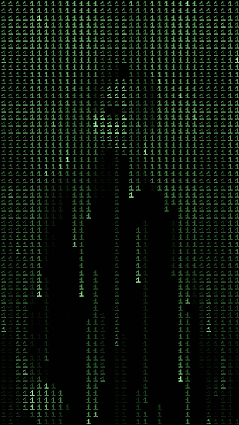

Как сформировать SMART-Цель
Матрица Эйзенхауэра
Метод назван в честь американского президента Дуайта Эйзенхауэра, который делил свои задачи на 4 категории:
-срочные, важные; -важные, несрочные; -срочные, неважные; -неважные, несрочные.
Срочные и важные задачи (1) выполняйте сразу и самостоятельно. Они имеют большое влияние на будущее, делегировать их нельзя. Важные несрочные дела (2) — самый комфортный режим работы. В нем вы можете планировать, взвешивать, рассчитывать и заниматься важными делами. Старайтесь держаться в режиме 2. В нем вы полезны и эффективны. Срочные и неважные задачи (3) делегируйте. Они отнимают много времени, но не приносят пользы. Несрочные и неважные (4) вычеркивайте.
Попробуйте соединить ваши получившиеся задачи ABCD с данной матрицей. Отныне у вас есть четкая картина степени важности задач, и их своевременного исполнения.
Записывайте задачи и цели в бумажный или электронный планировщик. Это поможет освободить голову и не переживать, что вы что-то забыли. Как бонус, получите массу удовольствия, вычеркивая выполненную задачу из списка. При этом мотивация завершить следующую задачу возрастает.
Задание 4
Наложите ваши предстоящие задачи на матрицу Эйзенхауэра и проведите рефлексию (правильно ли я работал раньше?).